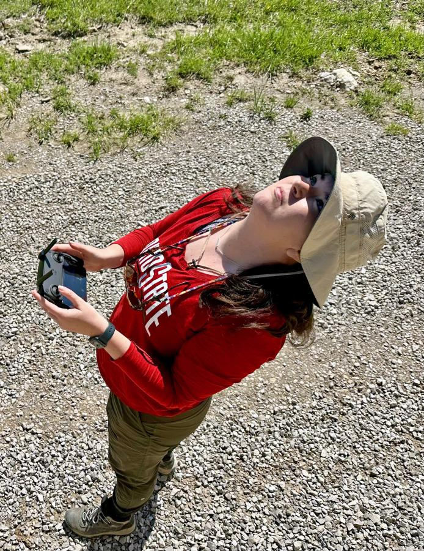

Jenna Kline, a researcher with the Imageomics Institute and The Ohio State University, is helping to make strides in wildlife conservation with an innovative drone research approach designed to advance current GPS or camera trap methods.
Kline is among researchers who published a paper at the 15th International Micro Air Vehicle (IMAV) Conference. The work focuses on developing drone swarms capable of monitoring animal behavior and gathering high-quality, multi-perspective data in the wild.
The project, titled "Drone Swarms for Animal Monitoring: A Method for Collecting High-Quality Multi-Perspective Data," explores the use of multiple drones to study gregarious animals, like zebras and other herd species. Led by Edouard Rolland, the work involves a collaboration from the University of Southern Denmark and other international partners, including Kline, Kasper Andreas, Rømer Grøntved, Lucie Laporte-Devylder, Anders Christensen, and Ulrik Pagh Schultz Lundquist.
Kline said by utilizing advanced algorithms and particle swarm optimization, the team has developed a system that can efficiently collect data without disturbing wildlife, addressing a major challenge in conservation technology.
"Our goal is to gather as much data as possible while minimizing our impact on the animals," Kline said. "The health of endangered species is tied to our ability to observe and understand them without interfering."
Kline said the research is critical for understanding the effects of climate change and human activities on endangered species. Traditional methods of wildlife monitoring, such as GPS trackers and camera traps, have limitations, especially when it comes to capturing comprehensive data across large, moving groups of animals. The drone swarm system proposed within the published research offers a cost-effective and non-intrusive way to monitor these animals in their natural habitats, providing a complete view from multiple angles.
The team's next steps include testing this drone swarm approach in real-world environments. Field tests are scheduled for early 2025, marking a significant milestone in applying cutting-edge drone technology to conservation efforts.